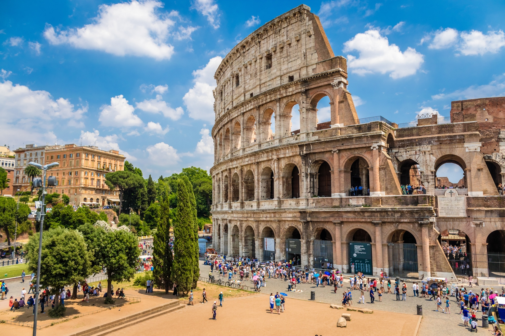
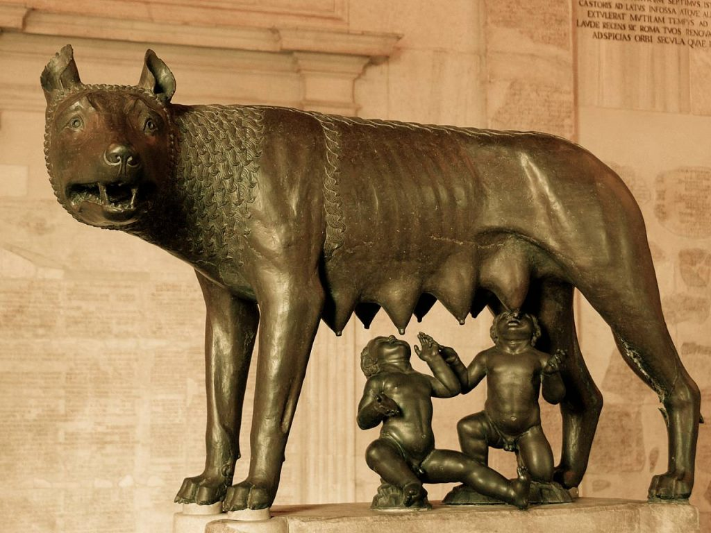

ModernRome

The capital and largest city of Italy,with over 2.8 million citizens living within it, being the third most populated city inside the European Union,beaten only by Berlin and Madrid. It is also the 2nd most visited city in EU,after Paris.
Top Tourism Attraction
1. Pantheon
2.Coloseum
3.Trevi Fountain
The Romulus Myth

A legend regarding the founding of Rome and a traditional stories that tells the earlist history of the City. The most well known of the Roman Myths.
The twins in this story are Romulus and Remus,their parents being urported to be Rhea Silvia and the god of war,Mars; or the Famous Hero Hercules.
The twins were abandoned at birth near the Tiber River, and nutured by a She-Wolf; as depicted by the famous statue called Captionile Wolf (left picture), till a shepherd named Faustulus found the boys and took them in and raised them as his sons.

When The Twins reached adulthood, they would established a city
They argued over where the city would be built and who would rule over it, both sides with their followers establishing city walls on their more favoured hills.
The common depiction of the following event was Remus leaping over his brother's wall as a insult, resulting in himself getting slain either by Romulus or Romulus's follower,
The ended with Romulus gaining rulership over the city and subsequently having the city named after himself, thus the creation of Rome
This event in the myth is often used to represent Rome's history of political dispute and bloodshed, for its creation began with fratricide and divisions.
Founding of the Empire